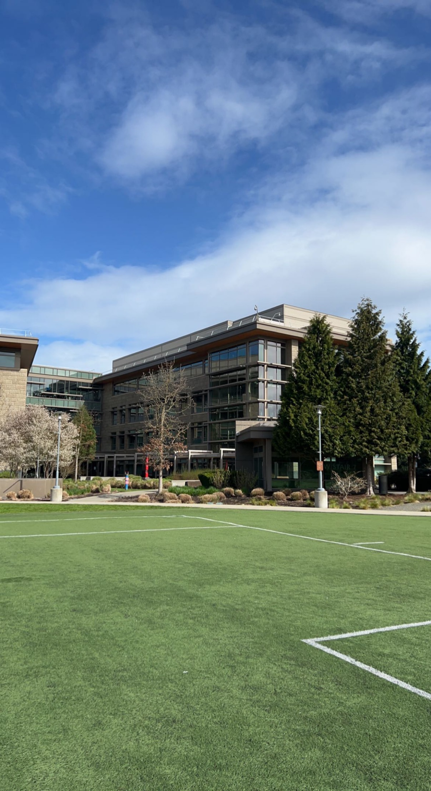

Hello Folks!
I will try to continue adding instances of (date, location, image, description). When I get to Wi-Fi zones I'll push the new memories.
Date: April 8, 2022
Location: Redwoods National Park, CA

After sunset in Coos Bay I drove to a campground in Redwoods National Forest (outside of Crescent City, California). The trees were big, but honestly didn't feel too special. Didn't spend much time here and immediately woke up and started driving to the Bay Area.
After 7 hours of driving I made it to Bolinas Beach (an hour north of SF) and hopped in the water. The ocean here was vastly different than what I saw in Oregon. Calm water, with predictable waves. Felt like the same Ocean as in Costa Rica and I was able to catch a wave fully. Great feeling and gave a confidence boost and sign of potential.
Looking forward to going out in SF with Charles and his friends. Will be taking a couple nights away from the tent and on a couch instead.
Date: April 7, 2022
Location: Coos Bay, OR


Had a really peacful wakeup in the mountains near Otter Rock. Cooking breakfast using the energy from the sun hits different!
After some breakfast and reading (Ben Franklin biography) I drove to Coos Bay, Oregon. The break here was a bit easier, but still not beginner friendly. I met some awesome people on the beach (marine biologist, carpenter, farmer) who were all surfers and were very helpful with giving me tips to understand what to try and read in the Ocean. The beach was nice and quaint and has probably been my favorite stop in the trip so far.
Going to drive to the redwoods in Northern California tonight and planning on driving to San Fransciso tomorrow night (April 8th) to hang out with Charles & Co. for the weekend.
Date: April 6, 2022
Location: Otter Rock, OR

I really want to learn how to surf. It seems like it shares a bunch of similarities with skiing (competitor is Mother Nature & it rewards aggression). When I tried to first surf the week in Costa Rica I loved being in the water and caught a couple baby waves, which gave me hope that I could take it a bit more seriously.
So I picked up a wetsuit and board and tried surfing in Otter Rock, Oregon. The waves were 5-8 feet with strong force and a powerful current. Not a break for beginners. So I kept it simple for the first day and was just practicing my paddling close to the shore. Still a really good workout, but seeing the other surfers attacking those big waves made it clear I have a lot of learning to do.
Going to continue driving south because there are a lot of things I'm planning for California and the waves will be more beginner friendly.
Date: April 5, 2022
Location: Lincoln City, OR

Spent a couple days hanging out in Seattle recovering from the crazy amount of time driving. Then I left to start the trip down the coast!
My first night was in Lincoln City, Oregon and this was my first true "off-road" experience. I pulled up to the trail pretty late and started driving towards the top. It was dark when I set up the tent but then woke up to this view. I loved it. Pretty cool being appreciative of the simple things.
Date: April 4, 2022
Location: Redmond, WA

Dropped clayton off at worked and walked around the Microsoft campus. It was pretty wild that this sprawling collection of buildings and greenery was for a single company. In some ways fascinating, but in my eyes felt excessive. Does an enterprise software company need to have a soccer field on their campus? If this isn't a "Monopoly" then what is...?
Date: April 3, 2022
Location: Cape Flattery, WA

After the rainforest, we drove to the northwest corner of the state and settled at a campground around 6 P.M. It was a long day of seeing stuff and we were pretty kicked, so just chilled out for most of the night.
The night was crazy rainy and windy. The tent shielded us but we got soaked packing up the car. As cool as the cascading geography is, I'm really not of fan of the constant rain. Beautiful geography for rain is not a trade I'm willing to make.
We made it to Cape Flattery in the morning. This is the home of the Makah Tribe. Clayton and I imagined the lives of Native Americans and found the views to be pretty mesmerizing. This is the most Northwest Corner of the lower 48.
We are taking the Ferry back to Seattle, getting cleaned up and grabbing dinner. I'm going to take Clayton to work tomorrow and will see the Microsoft campus.
Date: April 2, 2022
Location: Olympic Peninsula, WA


After the ferry we drove to the coast and found the Mora campground and set up tent there. We were able to cook breakfast with the induction burner and make coffee using the electric kettle but the battery was running out of juice. Solar panels not too effective up here in the Pacific Northwest...
The day started with a walk along the beach. We saw the geography for all its glory. The waves crashed hard, giant rocks, big ole' trees. Pretty impressive stuff.
Later on in the day we went to Olympic National Park and saw the Hoh Rainforest. The trees here were gorgeous.
Date: April 1, 2022
Location: Seattle, WA

I drove 8 hours, then slept at a rest stop for 3 hours, then hopped back on the road to get to Seattle by 8 A.M. Clayton welcomed me with a shower and a bed to rest in before a job interview at noon. I got the job offer but after speaking with the management team and hearing about my role it cemented my opinion that entry-level roles in the trading industry were definitely not for me.
Clayton and I are planning on going to the Olympic Peninsula to see the ocean, mountains, and rainforest. Should be an exciting venture. The ferry ride we took had a gorgeous backdrop of the city.
Date: March 30, 2022
Location: Salt Lake City, Utah

Made it to the future hometown! Came to drop items off in a storage locker and register the car. Another long day of driving and finished up cleaning the car out around 9 P.M. Too dark to find a nice off-road spot to set up camp unforuntately. So, settled on an RV park in downtown Salt Lake. This morning I registered the car, so now that it is clean and the errands are done I can make way up to Seattle to actually start the trip for what it is supposed to be. Will be searching for more peaceful, beautiful spots.
Arriving here was quite scary. I spent a few months with clear thinking and came to the conclusion this was a good decision. So why was it scary if I thought I planned?
Seeing the city made me question if it was actually possible to start a business and grow. I saw the city and then thought it was too daunting to expand it to such a large population. The feeling of doubt crept in and sparked even deeper questions. What am I doing? What do I want to be doing? But being forced to ask (and trying to answer) is the entire point of me putting myself in this environment, isn't it?
Luckily with a clearer head on my drive to Seattle I realized there was a flaw in my initial reaction. During the planning stage prior to the move I did not expect to build and magically distribute to an entire city. I fully acknowelged that for the idea to work I'd start in my neighborhood (a tractable problem), and if it succeeds grow from there. The "start local" rationale was the deciding factor into my apartment choice.
Date: March 29, 2022
Location: Big Springs, Nebraska

12 Hours and about 1,000 miles later I arrived at the Nebraska, Wyoming, Colorado intersection. Luckily there was campground right off I-80. I set up camp around 2 A.M. and it was 20 degrees with 40 MPH wind gusts. Unfortunate that the car was packed to the brim, so I couldn't find gloves + hat. So it goes. The tent exceeded my expectations! Was simple to set up in the pitch dark and was insulated nicely.
Date: March 29, 2022
Location: Chicago, Illinois

And we are off! After a short, but intense, stay in Chicago it is time to explore other parts of the world.
Going to give the car a name: Atlas.